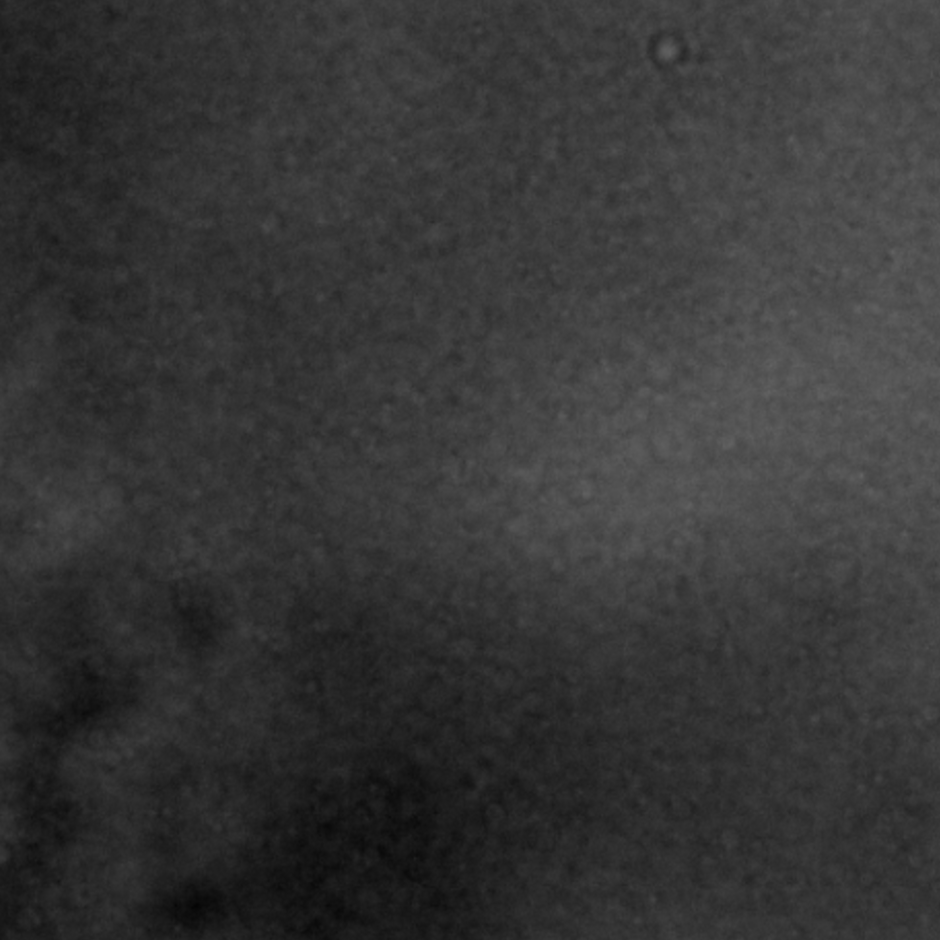
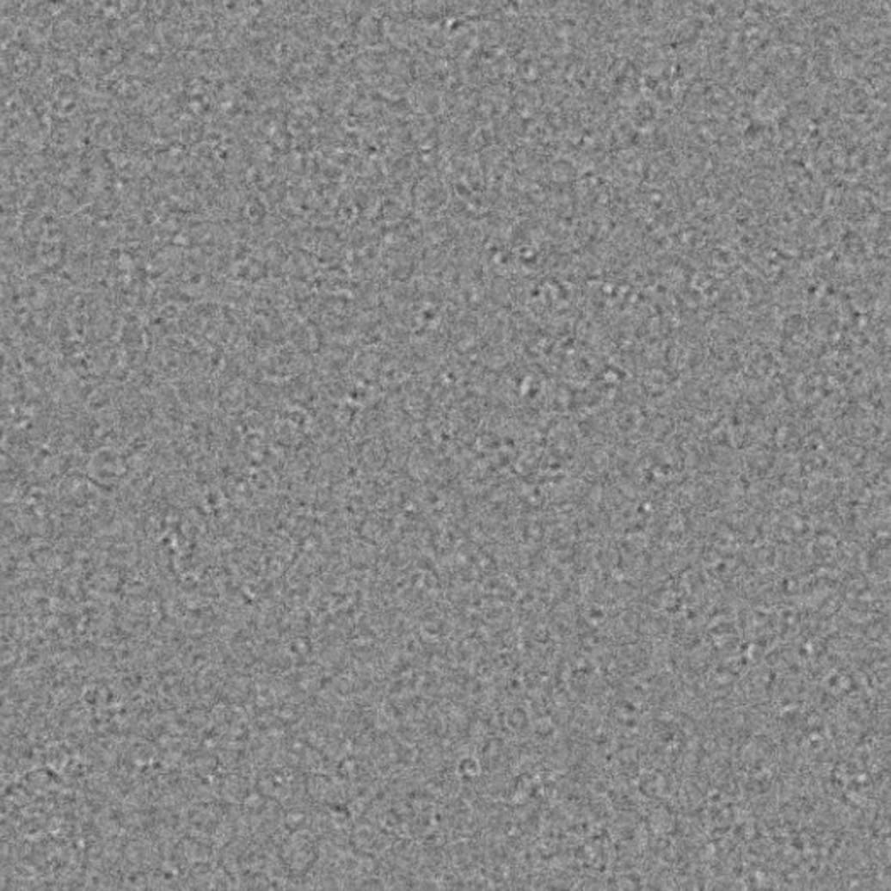
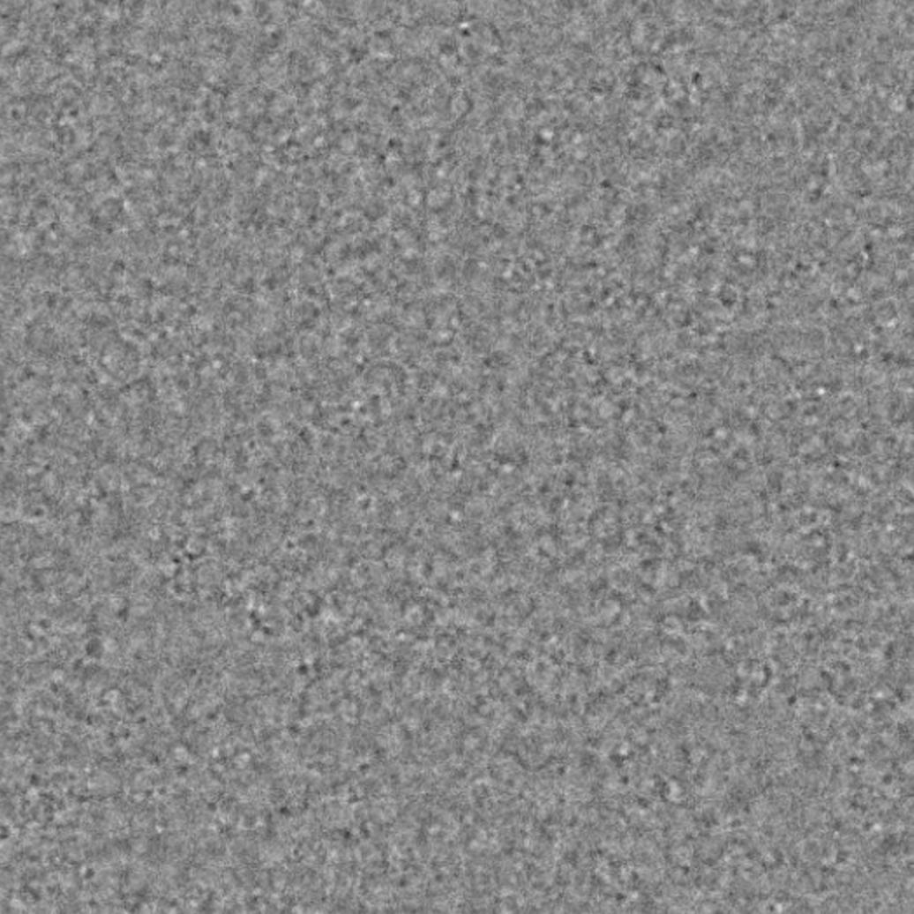
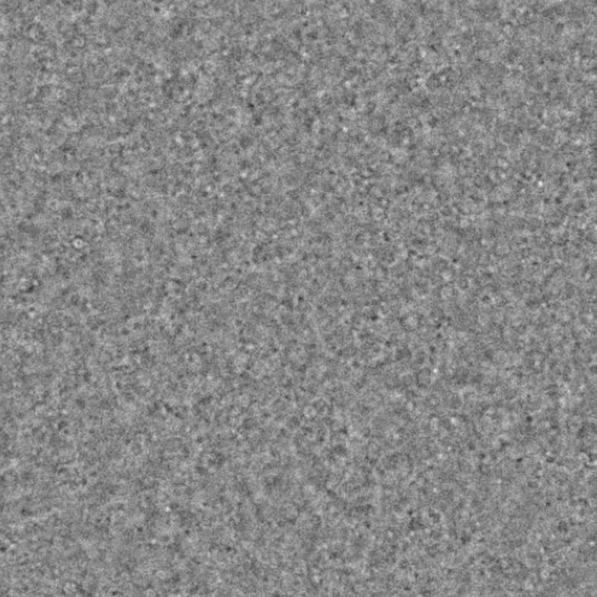
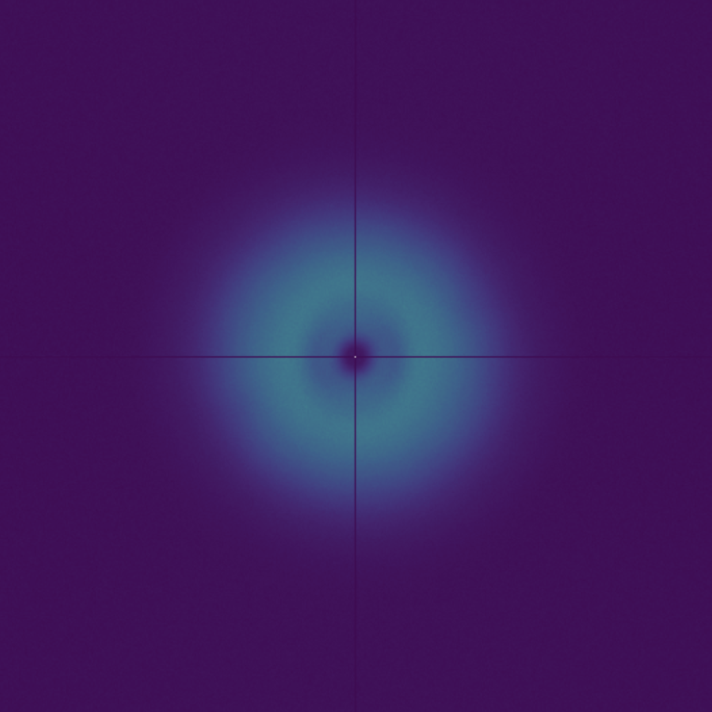
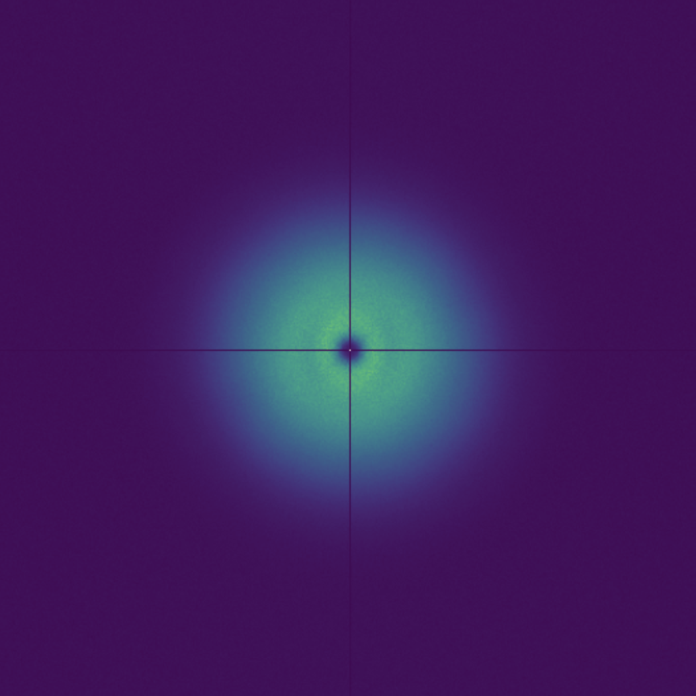
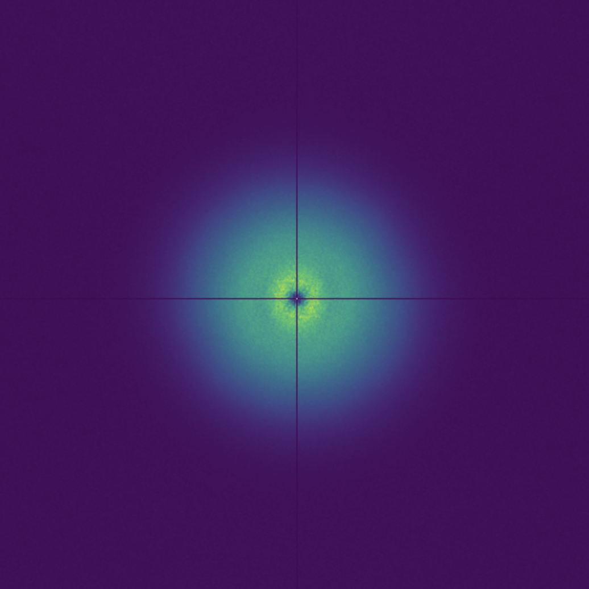

FastDDM is a Python package for the analysis of microscopy image sequences using Differential Dynamic Microscopy on CPU and GPU.
Differential Dynamic Microscopy (DDM) is a versatile and robust tool to quantify the multiscale dynamics of complex fluids and soft and biological materials.

DDM works by subtracting images acquired at different times. As the delay \(\Delta t\) between two images increases, the signal of the difference between two images also increases.
  
A 2D Fourier transform allows to quantify the growth of the signal of the image difference at different spatial scales.
  
The structure function stands as a foundation tool for unveiling spatial correlations and dynamic features within images.
It is connected to the static scattering intensity and to the intermediate scattering function that one would measure in static and dynamic light scattering experiments, respectively.
What is the motivation behind FastDDM?
FastDDM brings all these features!
FastDDM allows you to run your analysis from Python, which is one of the simplest and most widespread programming languages. Computing the structure function is as simple as
We strongly believe that collaboration and sharing is the key to success.
FastDDM is open-source and hosted on GitHub to simplify the development process and the introduction of new methods.
FastDDM allows you to harness the power of CPU and GPU. It comes with different core options:
(in order of increasing speed).
We also implemented two modes:
* CPU: AMD Ryzen 7 5800x; GPU: NVIDIA RTX 3080 Ti 12GB